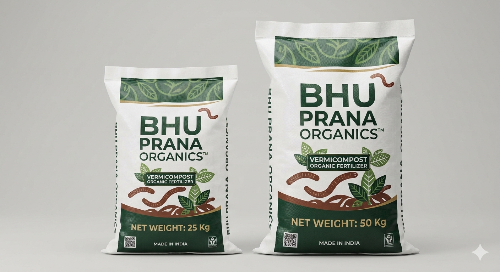

FLAGSHIP #1 • BLACK GOLD
FCO Certified Spec
Premium Cow Dung Vermicompost
100% Pure Indigenous Cow Dung digested by Eisenia fetida Red Wigglers

Our flagship vermicompost is produced strictly from pre-cooled, weed-free indigenous cow dung without mixing soil, sand, or sawdust. The resulting dark, granular worm castings are rich in water-soluble nutrients, humic & fulvic acids, and nitrogen-fixing bacteria (Azotobacter & Rhizobium).
NPK Profile
2.1% : 1.4% : 1.8%
Humic + Fulvic
8.5% – 11.2%
Texture
4mm Tea-Granule
Core Agronomic Benefits:
- Boosts Flowering & Yield: Natural plant growth hormones (auxins & gibberellins) accelerate root hair development and fruit set.
- Zero Root Burn: Gentle, neutral pH (6.8–7.2) makes it safe for delicate seedlings, indoor houseplants, and heavy-feeding vegetables.
- Pathogen & Weed Free: Thermophilic pre-composting eliminates weed seeds, grubs, and harmful nematodes.
Pack Sizes: 5kg Pouch • 25kg / 50kg HDPE Sacks
Order Vermicompost